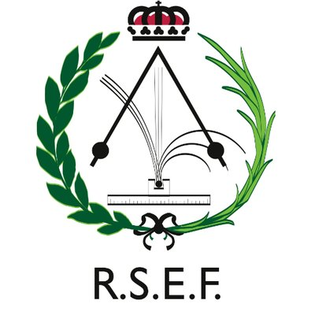
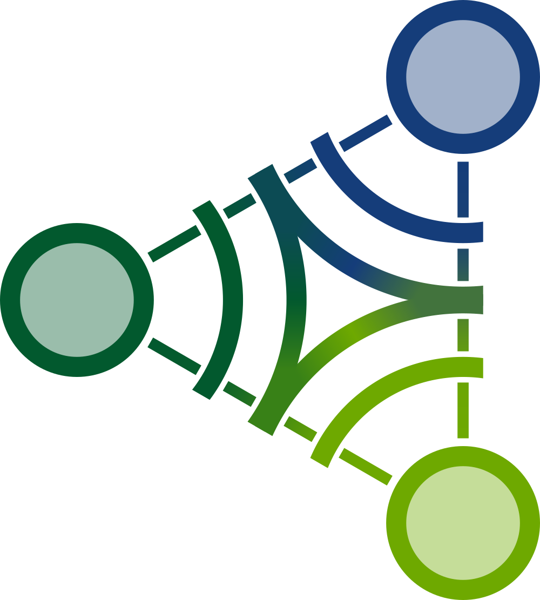
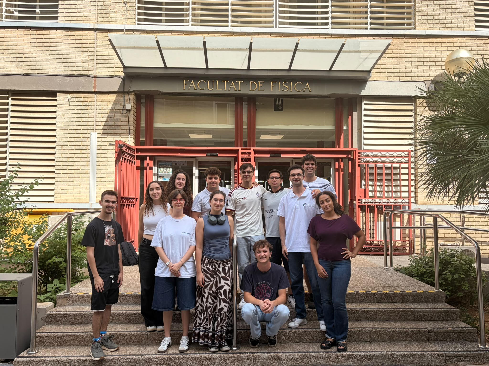

¿Quiénes somos?
RSEF
La Real Sociedad Española de Física es una institución sin ánimo de lucro dedicada al impulso, desarrollo y divulgación de la física tanto en el ámbito educativo como en la investigación.

G de E
El Grupo de Estudiantes de la RSEF conecta a estudiantes de física de toda España para fomentar la colaboración, organizar encuentros nacionales y representar sus intereses.

Delegación de la UV
Somos la delegación local en la Universitat de València. Organizamos charlas, talleres, observaciones astronómicas y actividades para acercar la física al alumnado.

¿Qué hacemos?
Divulgación y Charlas
Acercamos la investigación actual a la facultad mediante seminarios de bienvenida, conferencias y talleres prácticos abiertos a todo el estudiantado.
Competiciones y Encuentros
Preparamos y coordinamos la participación en eventos como las preliminares de Plancks o el Encuentro Nacional de Estudiantes de Física (ENEF).
Comunidad y Salidas
Fomentamos el compañerismo entre cursos con observaciones astronómicas nocturnas y actividades culturales dentro y fuera del campus.
¿Quieres participar o tienes alguna propuesta?
Descubre los próximos eventos de la delegación o infórmate sobre cómo inscribirte en la Real Sociedad Española de Física y colaborar con nosotros.